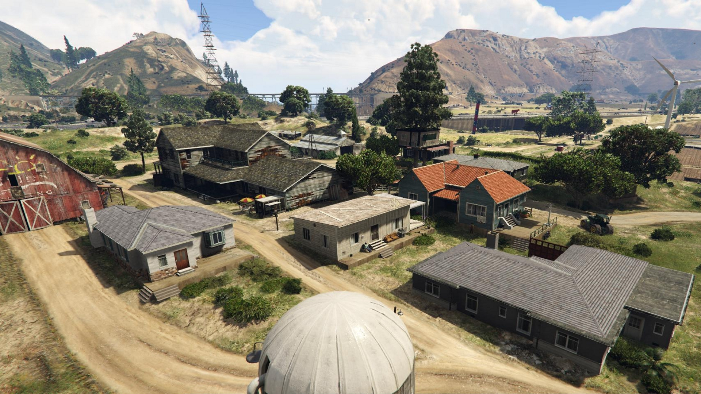
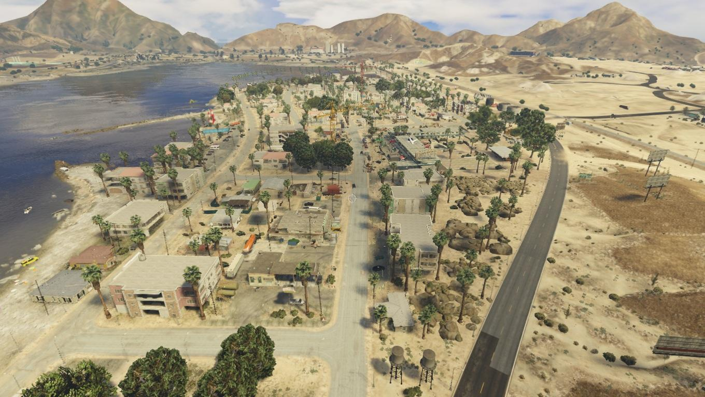
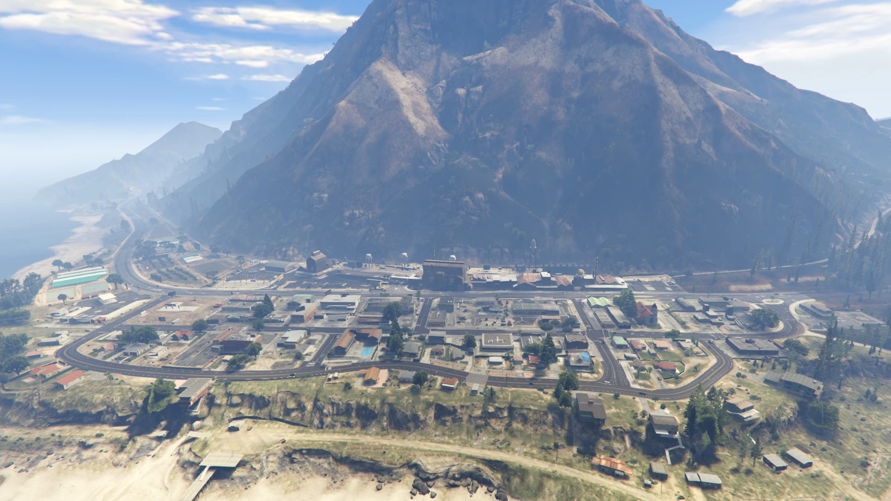

Bienvenue à
Blaine County
Blaine County est un comté géologiquement diversifié, comprenant une vaste région désertique, une forêt dense et plusieurs montagnes. Dans Blaine County on peut retrouver trois villes, Grapeseed, Sandy Shores et Paleto Bay

Grapeseed, ville principalement
agricole qui est dédiée à
fournir sa nourriture à San Andreas. La majeure partie de la zone est constituée de grands champs de cultures,
d'élevage et des granges.

Sandy Shores, ville de 3010
habitants, est desservie
par un
aérodrome au sud de la ville.

Paleto Bay, située au pied de
l'immense mont Chiliad, est une ville côtière qui abrite la ferme industrielle
Cluckin'Bell.